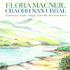

Celtic Lyrics Corner > Artists & Groups > Flora MacNeil > Craobh Nan Ubhal > Dh'fhalbh Mo Run Dh 'Fhag E'n Cala
|  | Dh'fhalbh Mo Run Dh 'Fhag E'n Cala |
| Credits : | Traditional; arranged by Flora MacNeil |
| Appears On : | Craobh Nan Ubhal |
| Language : | Gàidhlig (Scottish Gaelic) |
| Other Versions : | " Dh'fhalbh Mo Run 'S Dh'fhag E 'N Cala " on Maggie MacInnes' album Peaceful Ground |
| Lyrics : | English Translation : |
| Sèist : | Chorus (after each verse) : |
| Dh'fhalbh mo rùn 's dh' fhàg e 'n cala | My love has left the harbor |
| Dh'fhalbh mo rùn e ho o hiu | My love has gone e ho o hiu |
| Thog e na siùil ùr ri crannan | On the ship with new sails |
| Dh'fhalbh mo rùn 's dh' fhàg e 'n cala | My love has left the harbor |
| Dh'fhalbh mo leannan 'uam a Ile | My sweetheart has left me from Islay |
| Air long rìomhach nan tri crannan | On the fine three-masted ship |
| Dh'fhalbh mo leannan 'uam a dh'Eireann | My love has left for Ireland |
| 'S as a dhèidh cha bhi mi fallain | And I am left forlorn |
| Chuala mi gun d'rinn thu rèiteach | I heard you were betrothed |
| 'S gu dè feum a bh'a's a' ghealladh? | So what was your promise worth? |
| Chuala mi gun d'rinn thu pòsadh | I heard you got married |
| 'S cha d' dh' fheòraich thu mi gu d'bhanais | Without inviting me to the wedding |
| Thuirt na mnathan gur e 'm beud e | The women said that it was sad |
| Gun tug mi mo speìs dhan mharaich' | That I had given my love to the seaman |
| Chaneil unnam ach nighneag òg | And I am so young |
| Is gur e seòladair mo leannan | And it is the sailor that I love |
| Mo run an Leatheanach Ban | My love, the fair-haired MacLean |
| 'S ann dhut thug mi mo ghràdh 's mo ghealladh | It was to you that I gave my love and promise |